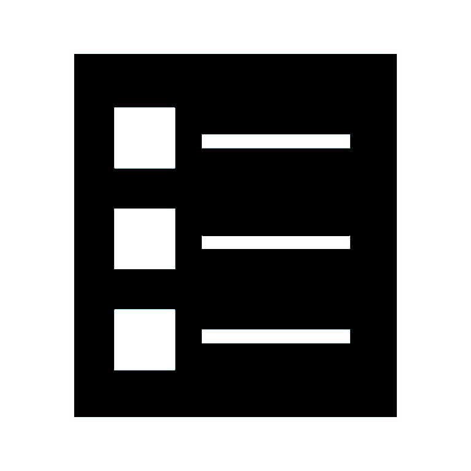
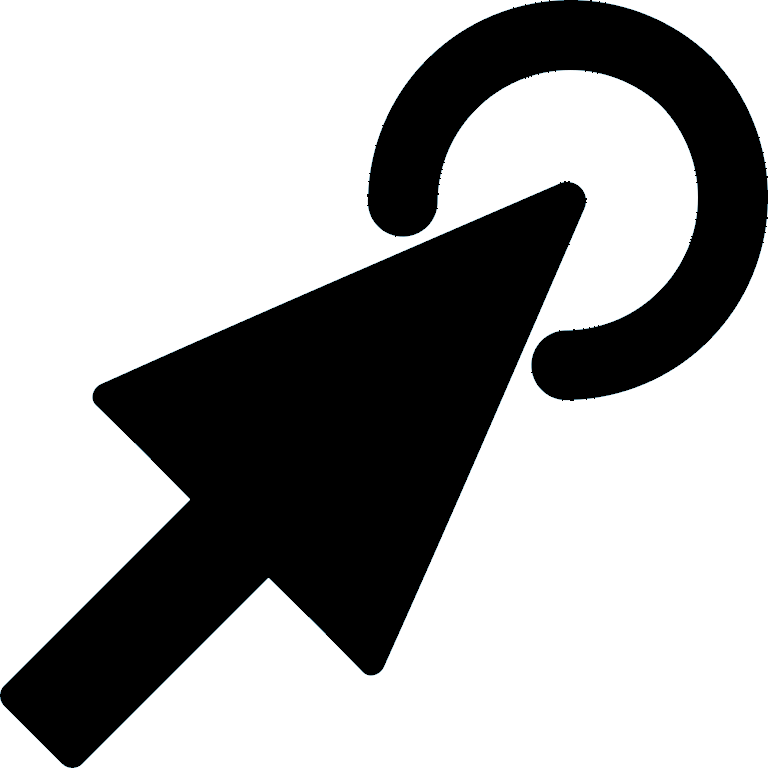

Welcome to the Harvard CS279 Menu Selection Test! Your contribution to our research allows us to learn more about graphical user interface, and can help improve future menu design.
Please read the following information carefully before proceeding.
Your participation in this research is voluntary. You are free to refuse to take part, and you may stop taking part at any time. You are free to discontinue participation in this study at any time without penalty.
What: You will be shown simple tasks and instructions to finish them. We will not ask you for your name. Any data that we collect will be securely stored.
Time: The duration of the test is approximately 25 minutes.
If you have questions about this research, you may contact Humberto Ceballos, Jenny Fan or Arjun Menon. If you have any questions about your rights or treatment as a participant in this research project, please contact Harvard University Committee on Use of Human Subjects at cuhs@harvard.edu.
By consenting to participate, I acknowledge that I have read this consent form, agree to its contents, and agree to take part in this research.
| 25 minutes | |
|  | 2 tasks |
|  | 50 trials |
 |
3 questionnaires |
If you wish to begin, please click on Start on the condition you are assigned (ask the experimenter if you are unclear)